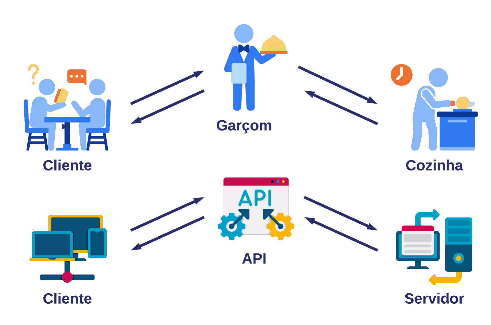
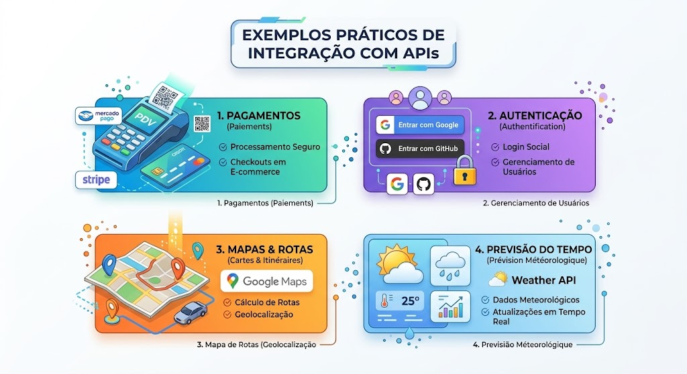

1. Introdução
Uma API (Application Programming Interface) é um conjunto de regras que permite que diferentes aplicações se comuniquem entre si. Elas funcionam como pontes, permitindo a troca segura e eficiente de dados na web.

2. Conceitos Principais
A maioria das APIs web modernas utiliza o padrão REST (Representational State Transfer) e transmite informações no formato JSON.
- Cliente: A aplicação (site ou app) que faz a requisição.
- Servidor: O sistema que recebe o pedido, processa e devolve a resposta.
- Endpoint: A URL onde o serviço da API está disponível.

3. Métodos HTTP Principais
Para interagir com uma API REST, utilizamos os métodos HTTP de acordo com a ação desejada:
| Método | Ação | Exemplo de Uso |
|---|---|---|
| GET | Buscar dados | Consultar lista de usuários |
| POST | Criar dado | Cadastrar um novo usuário |
| PUT / PATCH | Atualizar dado | Alterar a senha do usuário |
| DELETE | Deletar dado | Excluir uma conta |
4. Exemplos Práticos do Dia a Dia
As APIs estão presentes em quase todos os serviços web que utilizamos diariamente:
- Pagamentos: Checkout com Mercado Pago ou Stripe em e-commerces.
- Autenticação: Botões do tipo "Entrar com o Google" ou "Entrar com GitHub".
- Mapas: Localização e rotas integradas com o Google Maps.
